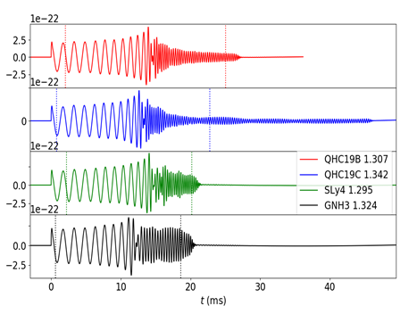
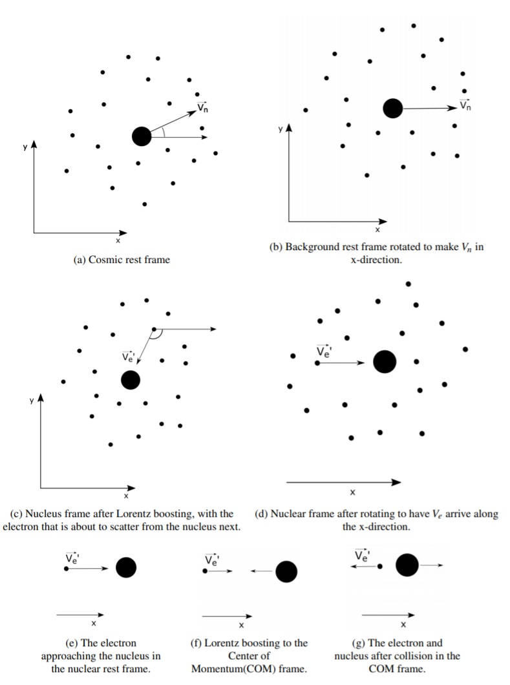

* For higher quality videos visit the research page. The information is identical on both these pages.
Mergers of a pair of neutron stars for different equations of state (EoS) starting from a single polytropic (first simulation) to Quark-Hadron Crossover EoS from Baym et al. (2019). Simulations performed by forming initial data using LORENE and evolution using Einstein Toolkit.
Plot specifications: Timescale is in "Cactus Units", where 1000 CU ≈ 5 milliseconds. The axes are normalized such that units 20 units ≈ 30kms.
Binary neutron stars of Masses = 1.2 Msun merging to form a hypermassive neutron star. EoS used is a single polytropic with Γ = 2. Here brighter means denser regions. Top-down view (cross-section of XY plane). M = 1.5 Msun pair starting at 45km separation. EoS = piecewise polytropic QHC19B. Here redder regions are denser regions, bluer regions are less dense. Merger at t ≈ 1400 CU, Black hole formation at about t ≈ 2600 CU. Equatorial view (cross-section of XZ plane). M = 1.5 Msun pair starting at 45km separation. EoS = piecewise polytropic QHC19B.
Notice QHC 19B (above) and 19C (below) undergo significantly different evolution histories. For EoS = 19B, the hypermassive neutron star collapses to being a black hole very quickly in comparison to 19C, which persists for much longer.
Top-down view. M = 1.5 Msun pair starting at 45km separation. EoS = piecewise polytropic QHC19C. Merger at t ≈ 1400 CU, Black hole formation at about t ≈ 7700 CU. Equatorial view. M = 1.5 Msun pair starting at 45km separation. EoS = piecewise polytropic QHC19C.Evolution of maximum rest-mass density vs time for several equations of state employed. The blue band indicates QHC-crossover densities (note: SLy does not have a crossover: however, indicating the crossover density is suggestive of the need to account for quark matter in hadronic EOSs). In all these cases, the NSs start in the crossover density range (2--5 $n_0$) followed by a rise in density, leading to a collapse to a black hole (in all except the bottom-right panel). The bottom-right case (QHC19D 1.399) does not form a black hole within the simulation time.

Gravitational wave signature for the binary. The elongated "ringdown" phase after the merger for 19C makes it the perfect fit for observations with future interferometer detections.
References: S.R. Brandt, B. Brendal*, W. E. Gabella*, R. Haas*, B. Karakas*, A. Kedia*, S.G. Rosofsky*, A.P. Schaffarczyk*, et al. (2020, May 30). The Einstein Toolkit (Version The "Turing" release, ET_2020_05). (*=co-second authors)
Big bang nucleosynthesis
I built a Multi-Species 3D Relativistic thermalization simulation technique usable to study the thermalization(or Brownian motion) of any system with various species of particles. Codes available in Ref. [2] and algorithm described in Ref.[3].
Further, I used this simulation tool to obtain the equilibrium statistics for baryons during Big bang nucleosynthesis (BBN) era of the early universe.

A schematic illustration of the algorithm for performing scatterings in the simulation code. Several frame changes and rotations are needed to be performed to make the scattering events solvable. A 3D Multi-Specie Relativistic thermalization. Here electrons and positrons are describe by their relativistic Fermi-Dirac statistics, whereas protons- nonrelativistic in these temperatures- starts with zero energy and attains a Maxwell-Boltzmann distribution. Same simulation for a 2D Multi-Specie Relativistic thermalization. Same simulation for a 1D Multi-Specie Relativistic thermalization.
References:
[3] github.com/AtulKedia93/Multicomponent_relativistic_thermlization .
[4] A. Kedia, N. Sasankan, G.J. Mathews, M. Kusakabe, Simulations of multicomponent relativistic thermalization, Phys. Rev. E 103, 032101 (2021).
[5] A. Kedia, N. Sasankan, G.J. Mathews, M. Kusakabe, Distribution function of nuclei from e± scattering in the presence of a strong primordial magnetic field, Phys. Rev. E 103, 032101 (2021).
[6] N. Sasankan, A. Kedia, M. Kusakabe, G.J. Mathews, Analysis of the multicomponent relativistic Boltzmann equation for electron scattering in big bang nucleosynthesis, Phys. Rev. D 101, 123532 (2020).
[7] G.J. Mathews, A. Kedia, N. Sasankan, M. Kusakabe, Y. Luo, T. Kajino, D.G. Yamazaki, T. Makki, M.El Eid, Cosmological solutions to the Lithium problem, JPS Conf. Proc. 31, 011033 (2020).
Einstein Toolkit contributions
The Einstein Toolkit is an international community-driven software platform of core computational tools to advance and support research in relativistic astrophysics and gravitational physics.
As an active member of the Einstein Toolkit community, I perform tests on the binary black hole and the binary neutron star gallery examples.